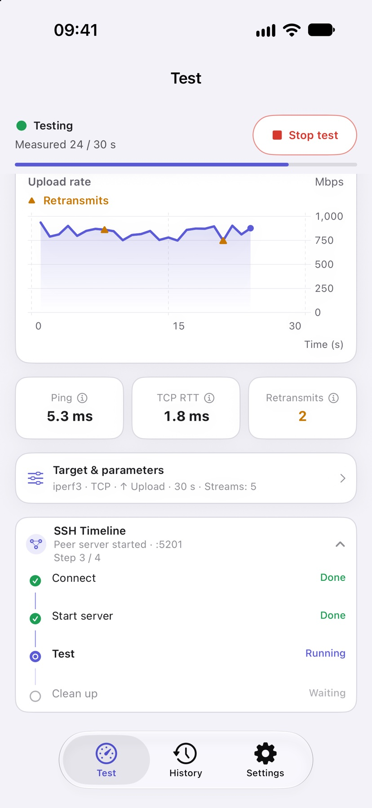
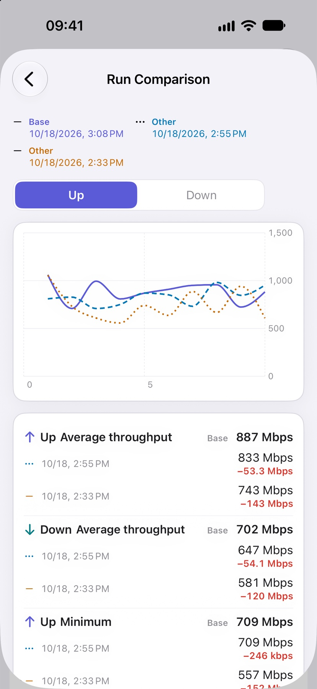
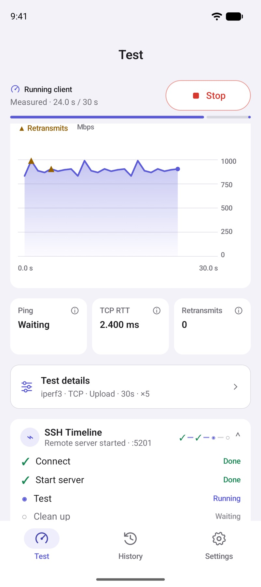
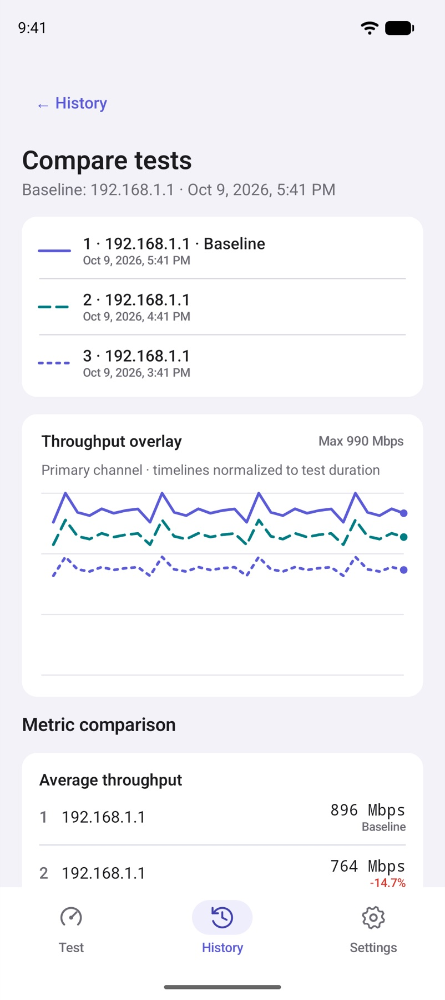
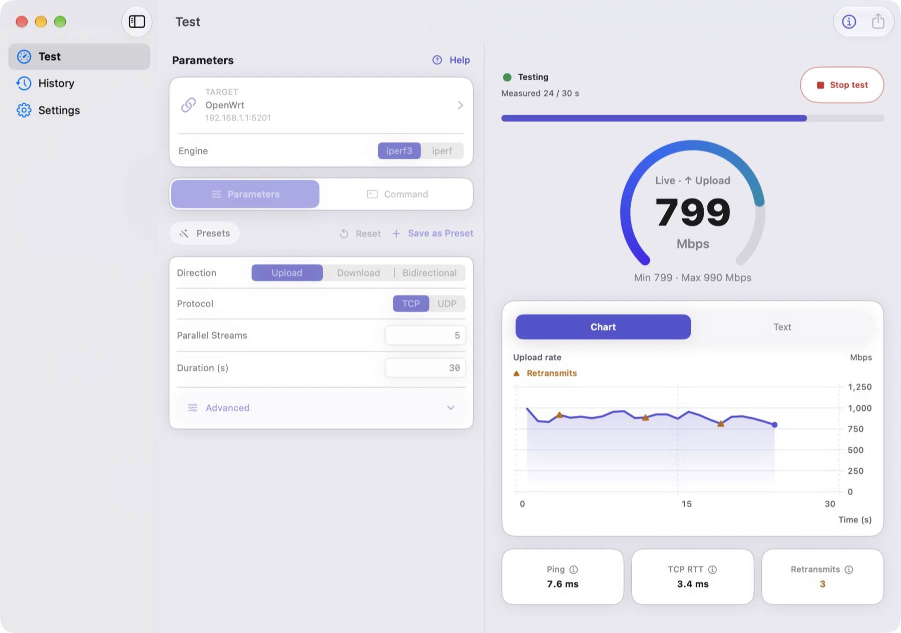

01
Connect
Choose your endpoint.
Enter an iPerf host, reuse a saved target, or try an independent public server.
How it worksA native iPerf toolkit
Measure Wi-Fi, LAN, and server throughput with iPerf3 and iPerf2. Choose your endpoints, see live results, and keep every useful measurement.
Free to download · Optional one-time Pro upgrade
Native where you work.
iPhoneiPadMacAndroidOne toolkit. Three ways in.
Test the route that matters to you, with endpoints and settings you control.
Choose your endpoint.
Enter an iPerf host, reuse a saved target, or try an independent public server.
How it worksMake your device the server.
See the address to connect to, then accept client sessions until you stop listening.
How it worksLet Falcon handle the setup.
Connect to OpenWrt or Linux, start the remote endpoint, run your test, and clean up. Requires Pro.
How it worksA closer look
Follow throughput, inspect protocol metrics, and compare runs. Select a platform; tap any screen to enlarge.





Swipe to explore more screens →
Screens show example data and may include Pro features. Appearance varies by device and app version.
Built for real networks
A repeatable measurement is a better starting point for understanding a bottleneck.
Home networks · Wi-Fi coverage
Keep the endpoint and test settings fixed. Measure in different rooms, then compare saved runs to see how throughput changes.
LAN · Ethernet · NAS
Test against an iPerf host on your LAN to investigate wired, wireless, router, or server bottlenecks.
OpenWrt · Linux · Pro
Use SSH orchestration, saved commands, and presets to repeat a measurement workflow on your own equipment.
Falcon Pro
Start with core testing for free. Add automation and repeatable workflows when you need them.
Purchases & platform details ↗Pro purchases are separate on Apple and Google Play. Comparison supports up to 6 runs on Apple and 4 on Android. Prices are shown in your store.
| What you can do | Free | Pro |
|---|---|---|
| Core TCP / UDP testing | Included | Included |
| Local server & live charts | Included | Included |
| History, individual exports & share cards | Included | Included |
| SSH orchestration & saved targets | — | Included |
| Advanced parameters, commands & presets | — | Included |
| Multi-run comparison & batch export | — | Included |
Yes. Connect to a compatible iPerf host, make another device the server, choose a third-party public server, or use Pro SSH orchestration to start your own endpoint.
No. Pro is an optional one-time in-app purchase. Apple and Google Play purchases are separate; use the account from the original store to restore access.
Test traffic goes to your chosen endpoint. History stays on your device. Falcon has no account system, ads, or analytics. Store services and third-party endpoints follow their own policies.
Ready when you are
iPhone, iPad, Mac, or Android. Start with the device you already have.
iOS / iPadOS 17+ · macOS 14+ on Apple silicon · Android 8+